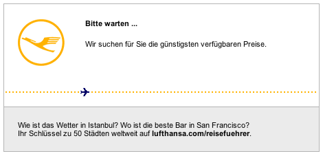
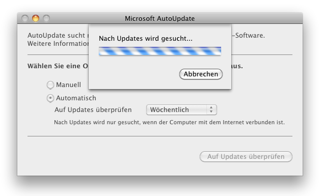
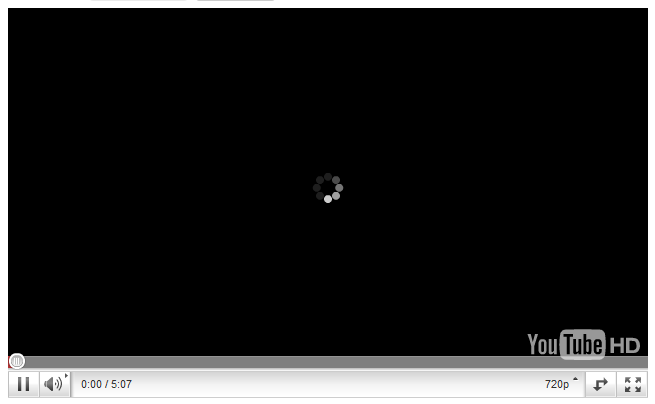

| Usability Pattern | Verarbeitungsanzeige |
|---|---|
| Alias | Processing Page |
| Problem | Benutzern möchten erkennen können, ob das System eine Aktion ausführt. |
| Lösung |
Zeige Benutzern, dass das System gerade eine Aktion ausführt, die noch nicht abgeschlossen ist. Informiere Benutzer, dass das System momentan eine Aktion ausführt und noch etwas Zeit für die Ausführung benötigt. Wenn der tatsächliche Fortschritt der ausgeführten Aktion dargestellt werden kann, verwende eine Fortschrittsanzeige . Andernfalls verwende z. B. eine animierte Darstellung, um die noch laufende Ausführung der Aktion zu betonen, auch wenn der Fortschritt und die noch verbleibende Dauer nicht angezeigt werden können. Verwende eine Verarbeitungsanzeige sowohl in Situationen, in denen Benutzer auf den Abschluss der Aktion warten müssen, als auch in Situationen, in denen die Aktion im Hintergrund ausgeführt wird und Benutzer weiter mit dem System arbeiten können. |
| Beispiele |
Flugsuche auf lufthansa.de Die Suche nach verfügbaren Flügen auf der Internetseite der Fluggesellschaft Lufthansa dauert einige Sekunden. Während dieser Zeit zeigt das System eine animierte Verarbeitungsanzeige, um Benutzer zu informieren, dass die Suche durchgeführt wird.  Verarbeitungsanzeige bei der Suche nach Flügen Microsoft AutoUpdate für Mac AutoUpdate sucht nach Aktualisierungen für installierte Microsoft-Office-Anwendungen. Die Abfrage der Update-Server dauert einige Sekunden. Während dieser Zeit zeigt AutoUpdate eine animierte Verarbeitungsanzeige und informiert Benutzer auf diese Weise, dass die Aktualisierungsprüfung noch läuft.  Verarbeitungsanzeige bei der Suche nach Aktualisierungen Youtube Die Video-Plattform YouTube zeigt beim Ladens eines Videos ein animiertes Symbol (kleine Kreise mit Farbverlauf, die um einen Mittelpunkt rotieren) dar, um Benutzer darüber zu informieren, dass das Video gerade geladen wird.  Verarbeitungsanzeige beim Laden eines Videos bei YouTube |
| Nutzungskontext |
|
| Begründung | Eine Verarbeitungsanzeige informiert Benutzer über den aktuellen Zustand des Systems. Benutzer erkennen, dass Sie in diesem Moment keine Eingaben machen, sondern die Ausführung der Aktion abwarten müssen. |
| Risiken, Nachteile, Kosten |
Eine Verarbeitungsanzeige sollte nur bei kurzer Verarbeitungsdauer (im Sekundenbereich) verwendet werden. Bei längerer Verarbeitungsdauer und fehlendem Hinweis auf den Fortschritt und und die verbleibende Verarbeitungsdauer können Benutzer sonst nicht erkennen, ob die Verarbeitung noch stattfindet oder ob das System aufgrund eines Fehlers nicht mehr reagiert. |
| Zusammenspiel |
Alternative Fortschrittsanzeige Wenn der Fortschritt eines langdauernden Verarbeitungsschritts sinnvoll berechnet und dargestellt werden kann, sollte anstelle einer Verarbeitungsanzeige eine echte Forschrittsanzeige verwendet werden. Diese informiert Benutzer nicht nur darüber, dass das System noch arbeitet, sondern erlaubt auch eine Abschätzung, wie lange der Verarbeitungsschritt noch dauern wird. Ergänzung Ausführung im Hintergrund Bei der Hintergrundausführung können Benutzern langdauernde Verarbeitungsschritte im Hintergrund auszuführen lassen und währenddessen zunächst normal mit dem System weiterzuarbeiten. Eine Verarbeitungsanzeige kann Benutzer dabei auf die noch laufende Verarbeitung im Hintergrund hinweisen. Ergänzung Abbruch Eine Abbruch-Möglichkeit für langdauernde Verarbeitungsschritte erlaubt Benutzern, die Verarbeitung abzubrechen, wenn sie zu lange dauert. Ergänzung Vorschau Falls die Ausführung einer Aktion längere Zeit benötigt, kann eine Vorschau auf die Resultate Benutzern helfen einzuschätzen, ob sie die Aktion tatsächlich ausführen möchten. |
| Anforderungserhebung |
Identifiziere Aktionen, für deren Ausführung das System längere Zeit benötigt.
Überlege, wie die Verarbeitungsanzeige für verschiedene Aktionen einheitlich dargestellt werden kann.
|
| Anforderungsspezifikation |
Spezifiziere globale Vorgaben für den Einsatz des Usability Patterns „ Verarbeitungsanzeige “:
Spezifiziere, für welche Interaktionen das Usability Pattern „ Verarbeitungsanzeige “ eingesetzt wird. Annotiere und ergänze dazu vorhandene Use Cases :
|
{kind=link}
{kind=link}
{kind=link}